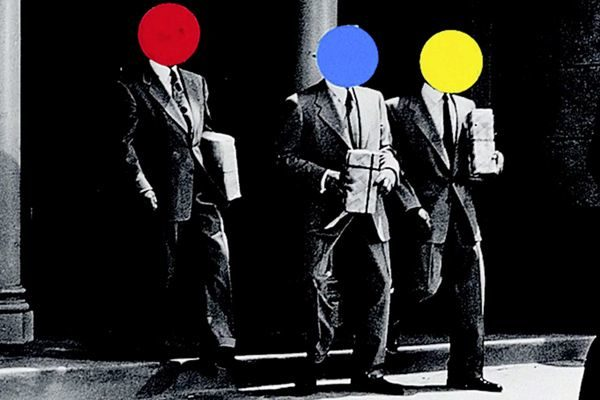
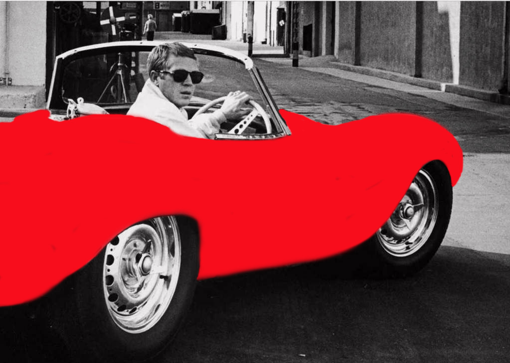
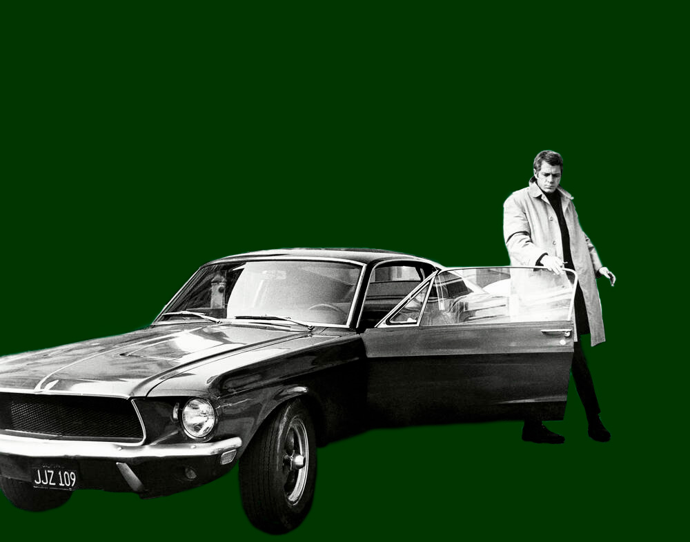

<!doctype html>
<html lang="en">
  <head>
    <meta charset="UTF-8" />
    <title>Title</title>
  </head>
  <body style="background-color: #275506"></body>
</html>

<html lang="en">
  <head>
    <meta charset="UTF-8" />
    <meta name="viewport" content="width=device-width, initial-scale=1.0" />
    <title>My Portfolio</title>
    <style>
      body {
        font-family: Arial, sans-serif;
        margin: 0;
        line-height: 1.6;
      }
      header {
        background: #275506;
        color: darkgoldenrod;
        padding: 1rem;
        text-align: center;
      }
      nav {
        background: #8d6925;
      }
      nav ul {
        list-style: none;
        margin: 0;
        padding: 0;
        display: flex;
        flex-wrap: wrap;
        justify-content: center;
      }
      nav ul li {
        margin: 0.5rem;
      }
      nav ul li a {
        color: #47f214;
        text-decoration: none;
        padding: 0.5rem 1rem;
        background: #5c560f;
        border-radius: 4px;
        transition: background 0.3s;
      }
      nav ul li a:hover {
        background: #b2a60b;
      }
      main {
        padding: 2rem;
      }
      section {
        margin-bottom: 2rem;
      }
      footer {
        background: #275506;
        color: darkgoldenrod;
        text-align: center;
        padding: 1rem;
      }
    </style>
  </head>
  <body>
    <header>
      <h1 style="font-family: serif">Joshua's Portfolio</h1>
      <p style="font-family: serif; font-size: x-large">ART2602C Introduction to Digital Studio Online / Fall 2025</p>
    </header>

    <nav>
      <ul style="font-family: serif">
        <li><a href="final%20portfolio%20pixelated.html">Pixelated</a></li>
        <li><a href="final%20portfolio%20bad%20photoshop.html">Bad Photoshop</a></li>
        <li><a href="final%20portfolio%20home.html">Home Page</a></li>
        <li><a href="final%20portfolio%20gifs.html">Animated GIFs</a></li>
        <li><a href="final%20portfolio%20glitch%20grit.html">Glitch and Grit</a></li>
      </ul>
    </nav>

    <main style="background-color: rgb(227, 215, 192)">
      <section id="perfectmask">
        <h2 style="text-align: center; color: darkgoldenrod; font-family: serif">Perfect Mask</h2>
        <p style="color: darkgoldenrod; font-size: x-large; font-family: serif;text-align: center">
          For the Perfect Mask assignment, I had to make 2 perfect layer masks which were to look like the work of John
          Baldessari. John Baldessari's altered imagery often come from 1970's or earlier, hence the requirement of also
          choosing old imagery for my work. Here's an example of Baldessari's work.
        </p>
        
        <p style="color: darkgoldenrod; font-size: x-large; font-family: serif;text-align: center">
          Love the suits those guys are wearing. Anyhow, here's my work.
        </p>
        <h2 style="text-align: center; color: darkgoldenrod; font-family: serif">Perfect Layer Masks</h2>
        
        
        <h2 style="text-align: center; color: darkgoldenrod;font-family: serif">Technical Notes</h2>
      <p style="color: darkgoldenrod; font-size: x-large;font-family: serif;text-align: center">
        Adobe Photoshop was used to
        mask the imagery. Images obtained from Google.</p>
       <h2 style="text-align: center; color: darkgoldenrod;font-family: serif">Process Documentation</h2>
      <p style="color: darkgoldenrod; font-size: x-large;font-family: serif;text-align: center">
        I'm quite the Steve Mcqueen fan, so
        when I was told to use old imagery, my mind immediately clicked to him. I thought of his beautiful cars he
        drove and wanted to do that for the masking work. The masking for the two was pretty simple. All I had to
        really do was outline each and properly fill/unfill areas. The colors I chose in particular for the images
        were the actual colors for the cars displayed as well.</p>
       <h2 style="text-align: center; color: darkgoldenrod;font-family: serif">Reflection</h2>
        <p style="color: darkgoldenrod; font-size: x-large;font-family: serif;text-align: center">
          Quite the simple project, but still
        good for enhancing technical skills. 
          It taught me the very basics of practicing using masks in photoshop, but it certainly
        trained my eye for accuracy to ensure that each photo was filled/unfilled as closely to the edges of the
        particular object. Whenever there was a slip up, it was definitely noticeable and so I had to make sure
        everything was clean and seamless. Using opacity was very important to even trace things out in the first
        place, but brush size and strength also played a strong part when it came to very close, tight areas.
        That said, there's some visible mistakes with the strength of the brush as seen in the red car. Some areas
        were just not properly filled in and unfortunately quite noticeable.</p>
        <p style="color: darkgoldenrod; font-size: x-large;font-family: serif;text-align: center">
          Still, I'm really happy with the way 
          these two came out. They look really cool. Maybe I should print them and hang them in my room somewhere.</p>
      </section>
    </main>

    <footer>
      <p>&copy; 2025 Joshua's Portfolio</p>
    </footer>
  </body>
</html>
